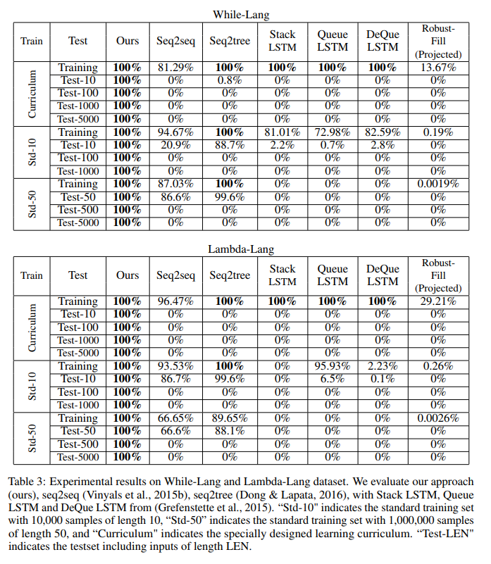

Why care about Program Synthesis
Rob Zinkov
2019-02-17
Program synthesis is now emerging as an exciting new area of research not just in the programming languages community, but also the machine learning community. In this post, I’d like to convince you why this area of study has the potential to solve precisely the kinds of problems existing approaches built around differential programming struggle with.
Basics of Program Synthesis
To start let’s informally and somewhat formally define what makes something a program synthesis problem. Informally, program synthesis is where given a some language \(\mathcal{L}\) and specification \(\mathcal{S}\) we return a program \(\mathcal{P} \in \mathcal{L}\) which meets that specification.
So what languages (\(\mathcal{L}\)) will we use? In principle, any language can be used. So we can synthesize Python code. In practice, because it is difficult these days to create programs much longer than 20-30 lines of code, we concentrate on domain-specific languages (DSLs). DSLs are languages like SQL, Regexes, or OpenGL shaders. If we are willing to be a bit loose about what defines a language, this can include synthesizing a set of library calls like Autopandas. All the matters is we can define a grammar that covers the space of programs we wish to consider.
<regex> ::= <term> '|' <regex>
| <term>
<term> ::= { <factor> }
<factor> ::= <base> { '*' }
<base> ::= <char>
| '\' <char>
| '(' <regex> ')'
Regex grammar
What do we mean by a specification (\(\mathcal{S}\))?
This can actually be a wide variety of things. \(\mathcal{S}\) can be in particular order one or more of the following:
- A formal specification of the problem including things like theorems that must be proved along with other formal verification steps.
- A set of input/output examples
- A set of unit tests and property-based tests
- A natural language description of the problem
- A set of execution traces of the desired program
- A sketch of a program where we have a partial program and some blanks we would like to fill in
- A correct but inefficient implementation of the desire program
While not strictly necessary, we may also have some side information like: * Similar but incorrect programs * A set of other programs in \(\mathcal{L}\)
If we restrict ourselves to a specification that consists of input/output examples and a language of pure functions we get something pretty similar to supervised machine learning. But because the specification can be much richer we actually tackle problems that are hard to pose in a way amendable to traditional machine learning algorithms.
Program synthesis is good for
Introduction
Now while it is a nice generic formalism that isn’t very compelling if there aren’t problems that benefit from being posed that way. Deep Learning and other optimization methods can now be used to solve a diverse set of problems. What problems tend to easier to solve with program syntheis? As things stand today that main advantages of specifically wanting to generate a program have to do with interpretability, generalisability, verification, combinatorial problems, and output needs to be a program.
Interpretability
Consider the task of automatically grading assignments. How would you go about doing this? You might treat this as a classification task where you find the errors. The challenge with this problem is there can be multiple valid solutions, and the fix for the assignment will depend on which solution you think the student was attempting.
Instead, we can synthesize the correct program but exploring the space of small edits that get us from the incorrect program to a correct program that satisfies an already written specification. These edits can then be presented to the student. This is precisely what the paper Automated Feedback Generation for Introductory Programming Assignments does on a subset of the Python language, and the paper Towards Specification-Directed Program Repair which does it for the robot manipulation DSL Karel.
If we didn’t treat this as a program we would have likely ended up with some character edits which as much less interpretable.
Generalisability
Many deep learning models struggle with generalisibility. They tend not to be very robust to small distribution differences between the training and the testing set as well as being prone to adversarial examples where small imperceptible changes to the input radically change the prediction.
But for many domains if we represent our function as a program it can be made more robust to perturbations of the input like that as can be seen in Learning to Infer Graphics Programs from Hand-Drawn Images
There are actually particular challenges that face the most popular machine learning models which give program synthesis approaches no problems. We know LSTM have trouble with copy and reverse functions as seen in the Differentiable Neural computers paper.
LSTM models have trouble generalising to test data longer than training data as can be seen in https://arxiv.org/abs/1904.11694
In contrast the papers Making Neural Programming Architectures Generalize via Recursion and Towards Synthesizing Complex Programs from Input-Output Examples show no issues with either of those tasks.

Verification
Another advantage comes from our output artifact from a program. Neural networks are difficult to formally verify and at present often require major restrictions be placed on the models. In contrast, with programs we can reuse existing infrastructure for verifying deterministic programs. We can thus verify these programs terminate or obey a formal spec. In some domains like robotics we can check if the program has controlability.
Problems with combinatorial shape
Problems that require dealing with graphs, trees, and permutations still remain fairly challenging for existing machine learning algorithms. Programs are a natural representation for manipulating combinatorial structures. Pointer networks, Sinkhorn networks along with work with Memory networks and Neural Turing Machines shows that at the moment it is difficult to learn a function that can handle anything beyond toy problems which themselves have trouble generalizing to larger domains.
Required to use some api / output must be program
And finally, sometimes for one reason or another you need an output that must satisfy some grammar. This might be learning to generate a phone number or a URL. We might have some API we need to conform like if we are trying to generate mobile software that needs to call out to Android or IOS primitives.
We could be using program synthesis for compiler optimization so we must generate a valid program as output. We could be learning to deobfuscate code. Or learning to generate code that would automatically hack a system.
Any other approach will need to model the grammar to make output that is acceptable and at that point could also be argued is performing program synthesis.
Conclusions
None of this is meant to say that these problems couldn’t be solved with other methods, but program synthesis has distinct advantages that enables them to solve them particularly well.